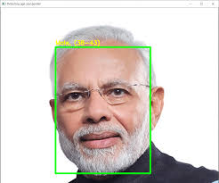
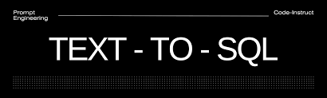

Education
Master of Big Data and High-Performance Computing
University of Liverpool | September 2022 - Expected September 2024
Courses: Data Mining and Visualisation, Computational Intelligence, Optimisation, Machine learning and BioInspired Optimisation, Big Data Analytics, Multi-Core and Multi-Processor Programming, Research Methods in Computer science, MSc Placement Experience, Machine Learning, Reinforcement Learning, Neural Networks, Data Mining and Visualization.
Bachelor of Computer Science and Engineering
CMR College of Engineering and Technology | August 2018 - July 2022
Grade: 8.2
Courses: Linear Algebra and Calculus, ODE’s and Multivariable Calculus, Data Structures and Algorithms, Discrete Mathematics, Database Management Systems, Numerical techniques and Probability Distributions, Data Warehousing and Data Mining, Artificial Intelligence, Python Programming, Image Processing, Big Data Analytics, Natural Language Processing, Artificial Intelligence, Natural Language Processing, Python Programming.
Experience
Data Analyst Intern
July 2023 - June 2024
Urban Science International, Reading, United Kingdom
- During my 12-month industrial placement at Urban Science, a global consulting firm specializing in automotive sales and marketing optimization, I served as a Data Analyst intern. My primary responsibility was centered around the Market View production project, where I played a key role in managing and processing large datasets to deliver actionable insights for automotive manufacturers and dealers.
-
Key Responsibilities:
- Market View Dashboard Maintenance: I was responsible for the monthly updates of the Market View Dashboard, ensuring accurate reflection of sales data and market trends for brands like Honda, Hyundai, Nissan, and Suzuki across various regions. This involved extensive use of SQL for data extraction and advanced Excel for report generation.
- Data Collection and Transformation: Aggregated and transformed data from multiple sources using SQL and Excel, ensuring data consistency and accuracy. This process included data cleaning, network maintenance, and model classification.
- Client Reporting: Produced comprehensive monthly and bi-monthly reports detailing client performance against industry benchmarks. These reports provided critical insights for decision-making, requiring proficiency in SQL, Excel, and data visualization.
- System Administration: Managed data and ensured accuracy in both Internal Quality Assurance (IQA) and Production environments. This included rigorous testing and validation of data before deployment to live systems.
- User Management: Handled the creation and management of user accounts within the Market View platform, including setting up multi-factor authentication and managing user permissions to ensure secure access.
-
Technical Skills Developed:
- SQL Proficiency: Developed complex SQL queries for data management, enhancing my ability to handle and process large datasets effectively.
- Advanced Excel: Mastered advanced Excel techniques, including macros and VBA, to automate data processing tasks and improve efficiency.
- Data Quality Management: Implemented rigorous quality checks to maintain data integrity throughout the data lifecycle.
- Data Visualization: Created intuitive dashboards and reports that translated complex data into actionable insights for clients.
-
Professional Skills Gained:
- Project Management: Managed multiple tasks and ensured timely delivery of reports, enhancing my ability to plan, prioritize, and execute projects efficiently.
- Client Communication: Strengthened communication skills by interacting with clients, understanding their needs, and delivering tailored data solutions.
- Team Collaboration: Worked closely with colleagues to foster a collaborative environment that facilitated knowledge sharing and problem-solving.
Software Engineer Intern
March 2022 - May 2022
OpenText, Bangalore, India
- Started as a Software Engineer intern at OpenText and contributed with a team of 7 professionals to the development and deployment of invoicing applications for major companies such as Tesco and ALDI.
- Wrote automated test cases and unit tests to ensure the quality and reliability of the model and improved accuracy by 3%.
Skills
- Languages: Python, SQL
- Frameworks: PyTorch, Pandas, Numpy, Scikit-Learn, Matplotlib, Seaborn
- Tools: Power BI, Excel, PowerPoint, MySQL, SQL Server Management Studio
- Platforms: Jupyter Notebook, Visual Studio Code, Vertex AI
- Data Skills: Statistics, Data Manipulation, Hypothesis Testing, Machine Learning
- Soft Skills: People Management, Excellent communication
Projects
Gender and Age Detection
D uring the last semester of my master's, I had the opportunity to choose elective subjects, and I opted for a group project in MSc. The main aim of the project was to detect gender and age from images. Users could input an image, and the system would predict the gender.
- Explored various stages of the project including data collection, data cleaning, data transformations, and model selection.
- Utilized the UTKFace dataset, consisting of around 25,000 labeled images with different age groups.
- Performed data cleaning to remove duplicates and ensure proper labeling of images.
- Applied data transformation techniques to prepare the data for modeling.
- Implemented a Convolutional Neural Network (CNN) model for image classification, specifically using transfer learning with ResNet models.
- Started with a basic model (ResNet18) and experimented with different ResNet models to improve accuracy.
- Trained the model with the prepared data and evaluated its performance.
Text to SQL Chatbot
-
Key Features:
- Natural Language Processing: The chatbot is capable of converting over 50 different types of natural language queries into executable SQL statements with a remarkable 95% accuracy. This allows users to ask questions in plain English and receive precise data-driven answers.
- Database Management:I engineered a robust SQLite database system to manage and analyze over 100 student records, which include fields such as NAME, CLASS, SECTION, and MARKS. This system showcases the chatbot’s ability to handle and process data efficiently.
- User Interface: The project utilized Streamlit to create an intuitive and interactive user interface, making it easy for users to input queries and view results.
-
Technical Highlights:
- Google’s Generative AI (Gemini Pro): Leveraged Google’s cutting-edge generative AI to interpret and translate natural language queries into SQL, ensuring high accuracy and reliability.
- SQLite Integration:The project demonstrated the efficient use of Python’s sqlite3 module for database management, enabling rapid processing and analysis of datasets.
- Streamlit for Frontend: Streamlit was used to design a simple yet powerful frontend that provides users with a seamless experience, allowing them to interact with the chatbot and view SQL-generated results in real-time.
Energy forecasting
-
Key Features:
- Model Development: Utilized Linear Regression, XGBoost, and LightGBM to create predictive models for solar energy generation. Through rigorous testing and optimization, I achieved the lowest Mean Squared Error (MSE), showcasing the model’s exceptional accuracy in forecasting.
- Data Preprocessing: Conducted thorough data preprocessing to ensure the quality and reliability of the input data. This included handling missing values, normalizing data, and encoding categorical variables, which are essential steps to prepare data for model training.
- Exploratory Data Analysis (EDA): Performed detailed exploratory data analysis to uncover insights and identify key features that significantly impacted the model’s performance. Techniques such as correlation matrices and scatter plots were used to visualize relationships between variables, guiding the selection of features for the models.
- Feature Engineering:Through EDA, I identified and engineered critical features that improved the predictive power of the models. This process involved selecting features that had strong correlations with the target variable and removing those that did not contribute to model accuracy.
-
Technical Highlights:
- Linear Regression: Implemented and optimized a simple yet powerful linear regression model as a baseline, providing a comparison for more complex models.
- XGBoost and LightGBM: Leveraged these advanced boosting algorithms to enhance the predictive capabilities of the models. These techniques were crucial in reducing prediction errors and improving the model’s generalization on unseen data.
- Model Optimization: Focused on hyperparameter tuning and cross-validation to optimize model performance, ensuring the most accurate and reliable predictions possible.
Certifications
- Supervised Machine Learning: Regression and Classification (DeepLearning.AI, Stanford University)
- Prompt Design in Vertex AI (Google)
- Introduction to Generative AI (Google)
- Introduction to Large Language Models (Google)
- Introduction to Responsible AI (Google)
- Ask Questions to Make Data-Driven Decisions (Google)
- The Data Scientist's Toolbox (Johns Hopkins University)
- Foundations: Data, Data, Everywhere (Google)
Accomplishments
- Secured first place in a competition held by the Data Science Artificial Intelligence Society at the University of Liverpool (Enappsys)
- Earned a Certificate of Achievement by ICPC for Asia Amritapuri First Round Programming Contest 2021
- Won a Gold medal in MTSO (Math Talent Search Olympiad) conducted by INTSO (Indian National Talent Search Olympiad)
- Earned a Certificate of Merit by INTSO (Indian National Talent Search Olympiad) in Aptitude, Mathematics
- Secured 1st place in the National Level Science Talent Search Examination conducted by the National Science Talent Search Foundation